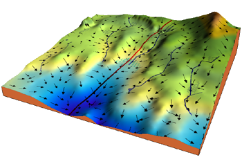

Gradient Descent
Contents
Gradient Descent#
Gradient descent is an optimization algorithm used to minimize some function by iteratively moving in the direction of steepest descent as defined by the negative of the gradient. In machine learning, we use gradient descent to update the parameters of our model. Parameters refer to coefficients in Linear Regression and weights in neural networks.
Introduction#
Consider the 3-dimensional graph below in the context of a cost function. Our goal is to move from the mountain in the top right corner (high cost) to the dark blue sea in the bottom left (low cost). The arrows represent the direction of steepest descent (negative gradient) from any given point–the direction that decreases the cost function as quickly as possible. Source
Starting at the top of the mountain, we take our first step downhill in the direction specified by the negative gradient. Next we recalculate the negative gradient (passing in the coordinates of our new point) and take another step in the direction it specifies. We continue this process iteratively until we get to the bottom of our graph, or to a point where we can no longer move downhill–a local minimum. image source.

Learning rate#
The size of these steps is called the learning rate. With a high learning rate we can cover more ground each step, but we risk overshooting the lowest point since the slope of the hill is constantly changing. With a very low learning rate, we can confidently move in the direction of the negative gradient since we are recalculating it so frequently. A low learning rate is more precise, but calculating the gradient is time-consuming, so it will take us a very long time to get to the bottom.
Cost function#
A Loss Functions tells us “how good” our model is at making predictions for a given set of parameters. The cost function has its own curve and its own gradients. The slope of this curve tells us how to update our parameters to make the model more accurate.
Step-by-step#
Now let’s run gradient descent using our new cost function. There are two parameters in our cost function we can control: \(m\) (weight) and \(b\) (bias). Since we need to consider the impact each one has on the final prediction, we need to use partial derivatives. We calculate the partial derivatives of the cost function with respect to each parameter and store the results in a gradient.
Math
Given the cost function:
The gradient can be calculated as:
To solve for the gradient, we iterate through our data points using our new \(m\) and \(b\) values and compute the partial derivatives. This new gradient tells us the slope of our cost function at our current position (current parameter values) and the direction we should move to update our parameters. The size of our update is controlled by the learning rate.
Code
1 def update_weights(m, b, X, Y, learning_rate):
2 m_deriv = 0
3 b_deriv = 0
4 N = len(X)
5 for i in range(N):
6 # Calculate partial derivatives
7 # -2x(y - (mx + b))
8 m_deriv += -2*X[i] * (Y[i] - (m*X[i] + b))
9
10 # -2(y - (mx + b))
11 b_deriv += -2*(Y[i] - (m*X[i] + b))
12
13 # We subtract because the derivatives point in direction of steepest ascent
14 m -= (m_deriv / float(N)) * learning_rate
15 b -= (b_deriv / float(N)) * learning_rate
16
17 return m, b
References